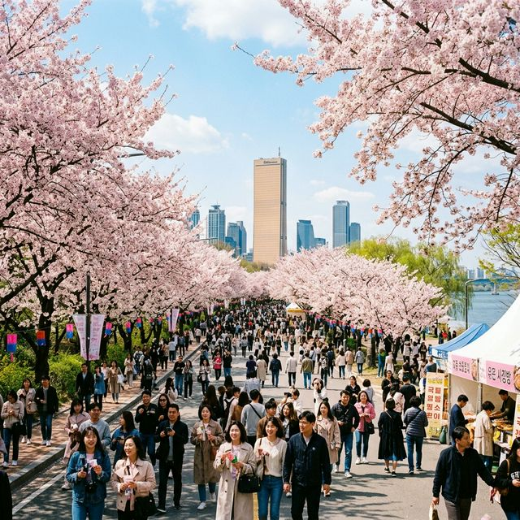
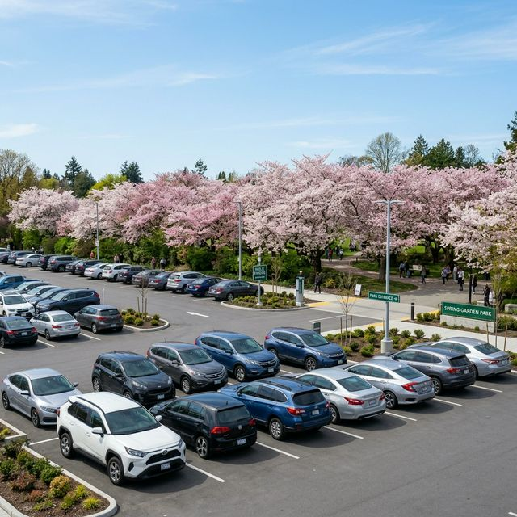
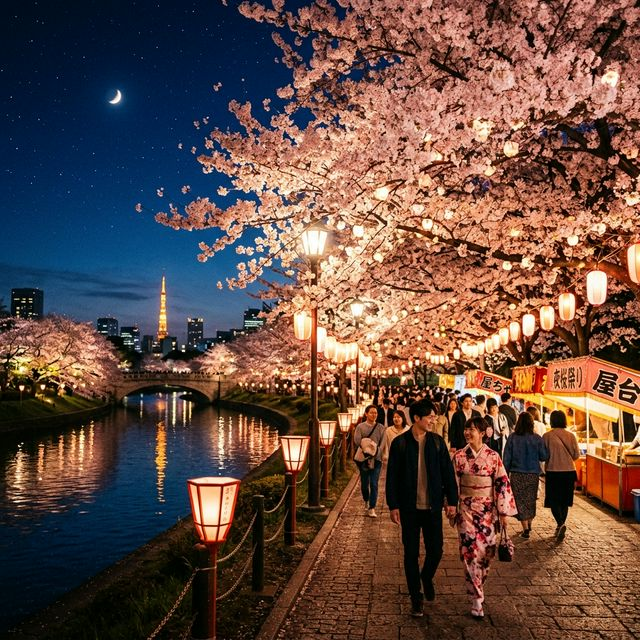

2026 여의도 봄꽃축제 개막 D-3: 헬게이트 피하는 숨은 무료 주차장 3곳과 대중교통 이용 꿀팁
올봄은 유독 개화 시계가 빠르게 돌아가고 있습니다. 당초 4월 벚꽃 개화를 예상했던 영등포구청 역시 만개 시점이 앞당겨지자 발 빠르게 축제 일정을 조정했습니다. 다가오는 4월
3일(금요일)부터 4월 7일(화요일)까지 단 5일간, 서울 한복판을 화려하게 수놓을 '2026 영등포 여의도 봄꽃축제'가 마침내 화려한 막을
올립니다. 국회의사당 뒤편 윤중로 벚꽃길을 걷기 위해 전국에서 몰려들 수백만 명의 인파. 하지만 대비 없이 차를 끌고 갔다가는 차 안에서 벚꽃잎만 세다 지칠 수 있습니다. 오늘은 행사 일정부터 극심한
교통통제 구간, 그리고 아는 사람만 안다는 꿀 주차 명당까지 1만 자 프리뷰로 완벽하게 정리해 드립니다.

▲ 따뜻한 햇살 아래 아름답게 핀 벚꽃 잔치가 벌어지고 있는 여의서로 윤중로의 눈부신 풍경입니다. (ratio 1:1)
1. 2026 여의도 봄꽃축제 핵심 일정 및 교통통제 팩트체크
가장 먼저 확인해야 할 사항은 바로 축제 기간과 통제 기간이 불일치한다는 점입니다. 실제 행사는 4월 3일 개막하지만, 무대 설치와 안전선 확보를 위해 보행로와 차량 전면 통제는 이틀
전인 4월 1일부터 시작됩니다.
🚦 2026 여의도 봄꽃축제 필수 일정 요약
- 축제 본 행사 기간: 2026년 4월 3일(금) ~ 4월 7일(화) (5일간)
- 차량 교통통제 기간: 2026년 4월 1일(수) 낮 12:00 ~ 4월 8일(수) 오후 14:00 (8일간)
- 전면 통제 구간: 여의서로 벚꽃길 (서강대교 남단 사거리 ↔ 여의하류 IC 교차로 구간 약 1.7km)
이 기간 통제 구역 내로는 일반 승용차, 택시, 공유 자전거, 킥보드까지 모든 바퀴 달린 이동 수단의 진입이 원천 차단됩니다. 특히 출퇴근을 여의도 방향으로 하시는 직장인분들은 서강대교 남단 쪽 극심한
병목현상 정체를 피하기 위해 우회도로 상황을 실시간으로 확인하셔야 합니다.
2. 차를 가져가야만 한다면? 여의도 숨은 주차장 스팟 3곳
영등포구청과 서울시가 강조하는 이번 축제의 모토는 '대중교통을 이용한 에코(Eco) 나들이'입니다. 하지만 영유아 자녀 동반이나 거동이 불편하신 어르신을 모시는 등
불가피하게 자가용을 이용해야 한다면 엄청난 주차 대란을 뚫어야 합니다. 한강시민공원 주차장은 새벽 6시가 지나면 이미 만차에 육박하므로 다음 3곳의 대안을 강력히 추천합니다.
여의도 봄꽃축제 주차장 명당 (주말 기준)
| 주차장 명칭 |
장점 및 도보 거리 |
주차 꿀팁 |
| 1. 국회의사당 부설 둔치 주차장 |
윤중로 도보 3분 / 일 최대 15,000원 |
주말 오전 8시 이전 진입 필수. 가장 가깝지만 금방 만차 됨. |
| 2. 서강대교 남단 공영주차장 |
여의도 순복음교회 인근 도보 10분 |
진입로가 막힐 수 있지만, 비교적 순환율이 빠른 편. |
| 3. (우회) 당산동 공영주차장 |
당산역 주차 후 지하철 9호선 1정거장 이동 |
★ 여의도 내부 진입을 포기하고 가장 스트레스 안 받는 방법. |

▲ 봄꽃축제 기간 여의도 내부 공영주차장은 그야말로 눈치싸움의 전쟁터가 되므로 대안을 미리 준비해야 합니다. (ratio 1:1)
3. 뚜벅이들의 승리! 대중교통 이용 및 지하철역 명당 라인업
여의도 벚꽃축제의 진정한 위너는 바로 지하철을 이용하는 뚜벅이 상춘객들입니다. 국회의사당을 둘러싼 여의서로는 지하철 접근성이 매우 뛰어납니다.
가장 메인 동선은 단연 지하철 9호선 국회의사당역(1, 6번 출구)입니다. 역에서 나와 약 5분 정도만 걸으면 화려한 벚꽃 터널의 초입에 도착할 수 있습니다. 하지만 주말
낮 시간대 국회의사당역은 밖으로 나가기 위해 계단에서만 30분을 서 있어야 할 위험도 있습니다.
💡 현지인처럼 쾌적하게 접근하는 우회 코스
인파에 밀려다니기 싫다면, 지하철 5호선 여의나루역(1번 출구)에 내려 여의도 한강공원 일대의 강바람을 쐬며 여의서로 방향으로 천천히 진입하거나, 오히려 반대편인
2호선 당산역(4번 출구)에 내려 한강 보행로를 따라 윤중로 쪽으로 15분간 피크닉 하듯 걷는 것이 훨씬 로맨틱한 동선이 될 수 있습니다.
4. 놓칠 수 없는 묘미, 야간 '달빛 벚꽃' 산책
낮의 벚꽃이 화려하고 생동감 넘친다면, 여의도 봄꽃축제의 마스터피스는 어둠이 내린 뒤 시작되는 '야간 경관 조명'입니다. 투광 조명이 분홍빛 벚꽃잎에 부딪혀 부서지는
모습은 서울 도심 어디서도 보기 힘든 몽환적인 분위기를 자아냅니다.

▲ 직장인들이 퇴근 후에 몰리는 이유, 로맨틱한 경관 조명이 켜지는 밤의 여의서로 벚꽃길 풍경입니다. (ratio 1:1)
무대 행사와 지역 푸드존은 대부분 저녁 8~9시면 종료되지만, 밤 10시까지 켜져 있는 벚꽃 터널 아래를 걷다 보면 마치 영화 속 한 장면을 걷고 있는 듯한 기분을 만끽하실 수 있습니다. 연인과 함께
데이트를 계획 중이라면 낮의 번잡함을 피해 밤 8시 무렵 여의나루 둔치에서 시작하는 코스를 강력히 추천합니다.
단 5일간 허락되는 2026년 봄의 하이라이트, 여의도 봄꽃축제! 따뜻한 봄바람과 함께 쏟아지는 꽃비 속에서 남긴 사진 한 장은 올 한 해를 버티게 해줄 가장 큰 추억 자산이 될 것입니다. 오늘
알려드린 교통통제 일정과 주차 꿀팁, 그리고 우회 동선을 참고하셔서 피곤함은 줄이고 행복함은 가득 채워오는 아름다운 상춘 여행이 되시기를 기원합니다. 🌸
데이터 출처: 2026 영등포구청 여의도 봄꽃축제 사무국 보도자료 종합
#여의도봄꽃축제
#여의도벚꽃축제
#여의도벚꽃축제주차장
#윤중로교통통제
#여의도주차꿀팁
#서강대교남단
#국회의사당역
#당산역벚꽃명당
#4월서울가볼만한곳
#여의도야간벚꽃